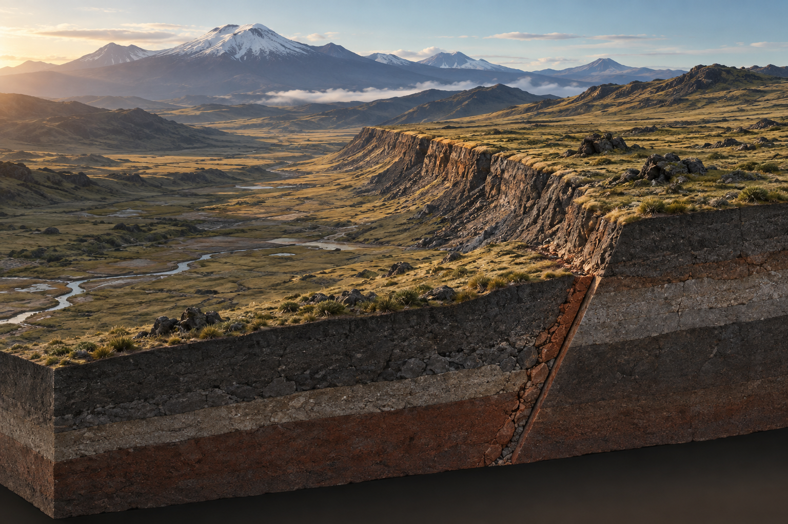
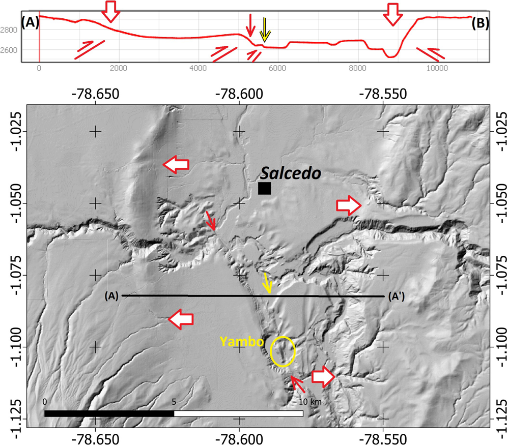
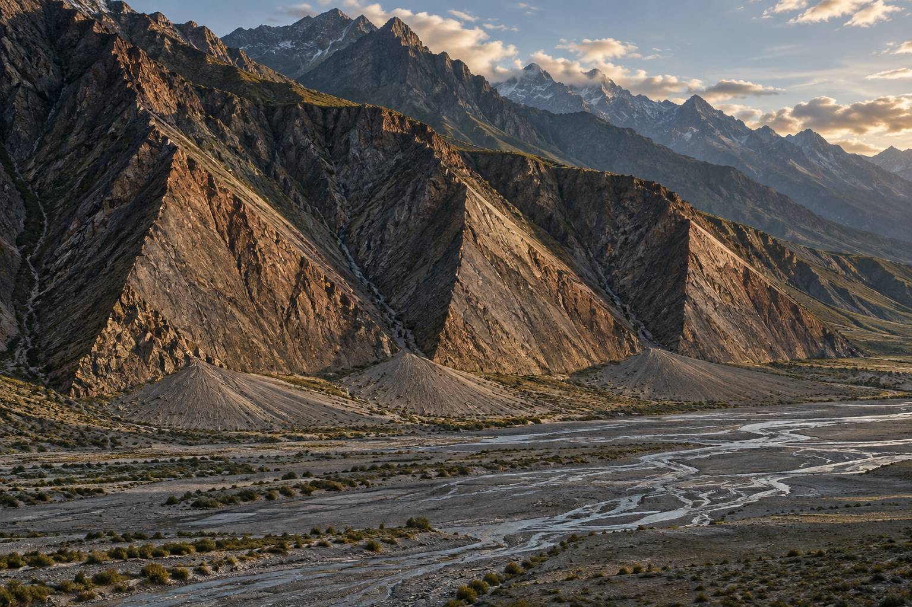
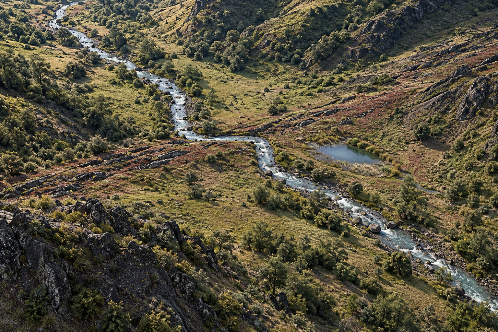

↙ bloque colgante desciende
↙ bloque colgante desciende
Extensión
Falla normal
En una falla normal, el bloque situado sobre el plano de falla desciende respecto al bloque inferior. La geometría es compatible con una corteza que se extiende o adelgaza.
Guía visual de campo
Una montaña, un valle o un río pueden parecer simples formas del relieve. Pero cuando varias pistas coinciden, el paisaje puede contarnos que la Tierra se ha estado deformando bajo nuestros pies.
Explorar el mapa
La primera pista no es una línea dibujada en un mapa. Es una anomalía: un cambio de pendiente, una cresta demasiado recta, un valle alineado o un drenaje que parece desplazado.
Cada una de esas formas puede tener varias explicaciones. La erosión, los deslizamientos, la sedimentación y la actividad volcánica también construyen relieve. Por eso la pregunta correcta no es “¿hay una forma que parezca una falla?”, sino “¿qué explicación explica mejor todas las pistas juntas?”.

Una pista no basta
↙ bloque colgante desciende
Extensión
En una falla normal, el bloque situado sobre el plano de falla desciende respecto al bloque inferior. La geometría es compatible con una corteza que se extiende o adelgaza.
 ↗ bloque colgante asciende
↗ bloque colgante asciende
Compresión
En una falla inversa, el bloque situado sobre el plano asciende respecto al bloque inferior. Es una expresión común de acortamiento y compresión de la corteza.
 ↔ desplazamiento lateral
↔ desplazamiento lateral
Cizalla
Los bloques se desplazan principalmente en horizontal, siguiendo el rumbo de la falla. El movimiento puede ser dextral o sinestral.
La forma del relieve sugiere una historia; la geometría de la falla, la geología de campo y otras mediciones permiten ponerla a prueba. No confundas una hipótesis razonable con una demostración.
Es una fractura —o una zona de fracturas— en la corteza donde existe desplazamiento relativo entre bloques de roca.
En superficie solemos hablar de traza: la intersección aproximada entre el plano o la zona de falla y el terreno. Pero una falla no es simplemente una línea. Puede ser una zona compleja, con varias superficies, fracturas secundarias, pliegues y cambios de geometría que se prolongan hacia profundidad.
Por eso, cuando mapeamos una falla, en realidad estamos intentando reconstruir una estructura tridimensional a partir de pistas que vemos en superficie y de mediciones que hacemos en el subsuelo.
Un sismo ocurre cuando la deformación y el esfuerzo acumulados en la corteza producen una ruptura o un deslizamiento súbito en una zona de falla, liberando energía que se propaga como ondas sísmicas.
El punto donde comienza la ruptura en profundidad se denomina hipocentro; su proyección sobre la superficie es el epicentro. La magnitud cuantifica el tamaño físico del terremoto, mientras que la intensidad describe cómo se siente o qué efectos produce en un lugar concreto.
Pero aquí aparece un problema: los instrumentos solo han observado directamente una pequeña fracción de la historia de la Tierra. Para muchas fallas, la recurrencia de grandes terremotos se mide en escalas de cientos o miles de años. El paisaje y las rocas pueden conservar pistas mucho más antiguas.

Los instrumentos solo han visto una fracción diminuta de la historia de una falla. El paisaje y las rocas vieron el resto.Por eso hace falta leer la Tierra, no solo medirla
Cuando una falla alcanza la superficie durante un terremoto, puede desplazar, fracturar, inclinar o plegar el terreno. Si después se depositan nuevos sedimentos, parte de esa deformación puede quedar enterrada y preservada.
La paleosismología busca esas huellas para reconstruir terremotos que ocurrieron antes de los instrumentos y, en muchos casos, antes de los registros históricos. No se trata de “leer” un terremoto como una fecha escrita en una roca: se construye una secuencia de eventos comparando capas, desplazamientos, relaciones de corte y edades.
 04
04
Un corte antrópico puede convertirse en una ventana al subsuelo. En Santa Rosa, las unidades de la Formación Tena están afectadas por superficies de ruptura y estructuras de deformación. La reconstrucción de las relaciones entre unidades permite proponer una historia de deformación y paleoeventos.
Observa: unidades desplazadas, relaciones de corte, microfallas y estructuras de deformación sedimentaria. Una señal aislada puede tener varias causas; el conjunto de relaciones es lo que permite construir una interpretación. 05
05
La litología, el color, el tamaño de grano y las estructuras sedimentarias ayudan a reconocer qué capas equivalentes se encontraban originalmente a cada lado de la falla.
 06
06
El desplazamiento entre marcadores equivalentes cuantifica cuánto se deformó el terreno. Su interpretación debe hacerse junto con la geometría de la falla y con la edad de las unidades afectadas.
Cuando diferentes capas contienen evidencias de ruptura en posiciones sucesivas de la secuencia, podemos separar eventos antiguos y establecer relaciones de “antes y después”. Si además obtenemos edades independientes, la historia puede expresarse en el tiempo.
La magnitud de un paleoterremoto puede estimarse mediante relaciones empíricas que conectan parámetros observables, como la longitud de ruptura y el desplazamiento, con magnitud sísmica. Estas relaciones proporcionan estimaciones; no convierten automáticamente una medición local en una magnitud exacta.
Ese principio también explica por qué los efectos ambientales de los terremotos son tan útiles: ruptura superficial, plegamiento, desplazamiento de depósitos, deslizamientos y licuefacción pueden ampliar la evidencia disponible más allá del daño a construcciones.
Geomorfología tectónica
Un escarpe, una faceta o un río desplazado pueden ser compatibles con tectónica, pero también pueden originarse por otros procesos. La interpretación gana fuerza cuando varias señales independientes cuentan la misma historia.
Un cambio lineal o abrupto de pendiente puede reflejar desplazamiento o plegamiento tectónico. También puede ser producido o modificado por erosión y procesos de ladera.
Observa: continuidad, orientación, cambios de pendiente, relación con depósitos y repetición a lo largo del frente.
Frentes montañosos con facetas repetidas y alineadas pueden conservar la geometría de un frente tectónico que ha sido modificado por erosión.
Observa: repetición, alineamiento, orientación de los abanicos y contraste entre montaña y piedemonte.
Un cauce desplazado, una cuenca cerrada o una zona húmeda alineada pueden ser pistas de deformación. Su origen debe comprobarse con la geometría del relieve y la evolución del sistema de drenaje.
Observa: quiebres sistemáticos, cursos desviados, zonas deprimidas y coincidencia espacial con otras evidencias tectónicas.Al norte de las secciones de rumbo del valle Interandino, la topografía alrededor de Ambato y Latacunga muestra pliegues y flexuras asociados a deformación compresiva.
El perfil topográfico A–B de esta figura cruza varias de esas anomalías del relieve. La geometría es compatible con deformación de componente principalmente vertical y con una componente inversa cerca de la superficie; sin embargo, un perfil topográfico por sí solo no determina de manera única la cinemática de una falla.
La interpretación se fortalece cuando el relieve se conecta con otras observaciones: se han documentado fallas inversas que afectan depósitos volcánicos cuaternarios y, alrededor de Yambo, el plegamiento modifica el drenaje y participa en la configuración del paisaje donde se encuentra la laguna.
Eso es lo importante: no estamos mirando una flecha roja y declarando “hay una falla”. Estamos reuniendo observaciones independientes y preguntando qué explicación las conecta mejor.

Del paisaje a la prueba
No existe una herramienta mágica. La estrategia consiste en combinar observaciones que responden preguntas diferentes: ¿dónde está la estructura?, ¿cuánto se ha movido?, ¿cuándo ocurrió?, ¿y qué parte de esa historia sigue activa?
Cartografía y trabajo de campo. Permiten reconocer contactos, fracturas, pliegues, desplazamientos y relaciones de corte. Es la base para convertir una forma del relieve en una hipótesis geológica comprobable.
Modelos de elevación, fotogrametría y LiDAR. Hacen visible la geometría del relieve y permiten medir escarpes, flexuras, terrazas y drenajes con alta resolución. El LiDAR es especialmente útil donde la vegetación oculta la superficie.
Geofísica. Sísmica de refracción o reflexión, GPR y tomografía eléctrica pueden ayudar a rastrear contrastes y estructuras bajo la superficie sin excavar toda el área.
Trincheras paleosismológicas. Se excavan de forma estratégica para observar capas cortadas, plegadas o desplazadas por la falla. Después se correlacionan unidades y se buscan edades que permitan ordenar los eventos.
Geocronología. Radiocarbono, luminiscencia y otros métodos pueden proporcionar edades para depósitos y superficies. La elección depende del material, el ambiente y la pregunta científica.
GNSS, InSAR y monitoreo. Permiten medir deformación actual o intersísmica. Conectan la historia que vemos en el paisaje con los procesos que están ocurriendo hoy.
El objetivo final no es coleccionar mapas. Es reducir la incertidumbre: cada técnica aporta una pieza diferente de la historia tectónica, y la interpretación es más sólida cuando esas piezas son compatibles.
Laboratorio interactivo
Observa el desplazamiento, identifica la geometría y formula una hipótesis antes de mirar la respuesta.
Esquema conceptual · no está a escala
Detalles que cambian la mirada
Una falla no tiene por qué verse como una línea. Puede ser una zona compleja de fracturas, pliegues y estructuras secundarias.
Un relieve grande no necesita un movimiento grande cada año. Pequeños desplazamientos acumulados durante miles de años pueden construir montañas y cuencas.
Los ríos también guardan memoria. Sus cambios de curso, terrazas y desviaciones pueden registrar la evolución del relieve, aunque siempre deben interpretarse en su contexto geomorfológico.
“Activa” no significa “inminente”. Reconocer una falla es un paso para evaluar su comportamiento y amenaza; por sí solo, el mapa de una falla no dice cuándo ocurrirá el próximo terremoto.
Método de exploración
Busca cambios de pendiente, alineamientos, valles, terrazas, drenajes y cualquier forma que rompa el patrón esperado.
Pregunta si el patrón puede explicarse por erosión, sedimentación, volcanismo, gravedad o tectónica. Una buena hipótesis compite con otras.
Compara topografía, geología, campo, geofísica, cronología y, cuando exista, sismicidad. Cuantas más líneas de evidencia sean compatibles, más sólida es la interpretación.
Para seguir explorando
Esta guía usa fuentes institucionales y bibliografía de referencia para explicar conceptos generales. Las interpretaciones de sitios concretos deben consultarse en sus fuentes originales.
Ahora mira el territorio
Activa la topografía, compara capas y sigue las formas del relieve. La idea no es encontrar una línea y llamarla falla: es conectar patrón, evidencia e interpretación.
En el visor puedes comparar por separado la distribución de fallas y sismos, y volver a cada ficha para revisar su fuente y nivel de confianza.